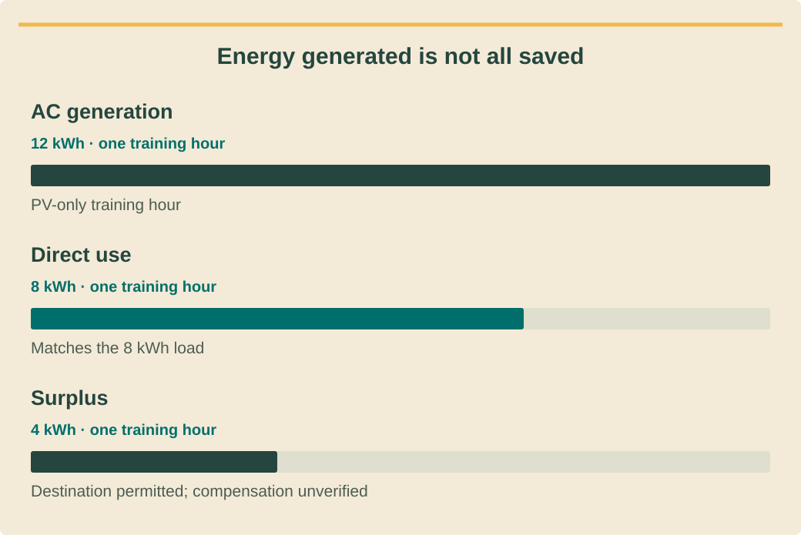

Finance and investment analysisכספים וניתוח השקעותการเงินและวิเคราะห์การลงทุน · 1 / 9
The meter-to-money ledgerספר המדידה לכסףบัญชีจากมิเตอร์สู่เงิน
Define the physical and accounting boundary before calculating return.להגדיר גבול מדידה וחשבונאות לפני תשואה.กำหนดขอบเขตพลังงานและบัญชีก่อนคำนวณผลตอบแทน
What you will be able to doמה תדעו לעשותสิ่งที่คุณจะทำได้
- Reconcile energy without double counting.ליישב אנרגיה בלי ספירה כפולה.กระทบยอดพลังงานโดยไม่ซ้ำ
- Separate power, energy and bill items.להפריד הספק אנרגיה וחיובים.แยกกำลัง พลังงาน และค่าบิล
- Create an auditable input ledger.ליצור רישום קלטים הניתן לבדיקה.จัดทำบัญชีข้อมูลตรวจสอบได้
Define the accounting boundaryהגדרת גבול חשבונאיกำหนดขอบเขตบัญชี
Start with the meter that pays the bill and the equipment connected behind it. Record time interval, units, source and sign convention for every series. A resort’s total consumption cannot automatically be offset by generation connected to one separate building meter.התחילו במונה המשלם ובציוד מאחוריו. תעדו מרווח זמן, יחידות, מקור וסימן לכל סדרה. ייצור במונה של בניין אחד אינו מקזז אוטומטית צריכת ריזורט שלם.เริ่มจากมิเตอร์ที่จ่ายบิลและเครื่องหลังมิเตอร์ ระบุช่วงเวลา หน่วย แหล่ง และเครื่องหมายแต่ละชุดข้อมูล ผลิตหลังมิเตอร์อาคารเดียวไม่ได้หักใช้ไฟทั้งรีสอร์ตโดยอัตโนมัติ
Keep kW for power and kWh for accumulated energy. If a meter reports average power over fifteen minutes, multiply by 0.25 hours to obtain interval energy. Do not multiply a nameplate rating by a whole month and call the result measured consumption.שמרו קילוואט להספק וקוט״ש לאנרגיה. הספק ממוצע לרבע שעה מוכפל ב־0.25 שעות לאנרגיית מרווח. אין להכפיל הספק תווית בחודש ולכנות זאת צריכה מדודה.ใช้kWสำหรับกำลัง kWhสำหรับพลังงานสะสม ถ้ามิเตอร์ให้กำลังเฉลี่ย15นาทีคูณ0.25ชั่วโมงเป็นพลังงานช่วงนั้น อย่านำกำลังป้ายคูณทั้งเดือนแล้วเรียกว่าการใช้ที่วัด
Reconcile a simple PV-only intervalיישוב מרווח סולאר ללא אגירהกระทบยอดช่วงโซลาร์ไม่มีแบต
For a no-storage interval with all generation and load measured on the same AC boundary, self-consumption is the smaller of generation and load. Imports equal unmet load; exports equal surplus generation only where that operation is allowed. Record curtailment separately.במרווח ללא אגירה עם ייצור וצריכה באותו גבול AC, צריכה עצמית היא הנמוך ביניהם. רכישה היא עומס שלא סופק; עודפים הם ייצור עודף כשהפעלה מותרת. קיטום מתועד בנפרד.ช่วงไม่มีแบต วัดผลิตและโหลดบนขอบเขตACเดียวกัน ใช้เองคือค่าน้อยกว่า ซื้อเข้าคือโหลดที่ยังขาด ส่งออกคือผลิตเกินเมื่ออนุญาต บันทึกการจำกัดผลิตแยก
Check both balances: load equals self-consumption plus imports, and generation equals self-consumption plus export or other explicitly defined destination. These checks reveal sign errors and accidental merging of meters before any tariff multiplication makes the mistake harder to see.בדקו: עומס שווה צריכה עצמית ועוד רכישה; ייצור שווה צריכה עצמית ועוד עודפים או יעד מוגדר. בדיקות אלה מגלות שגיאות סימן וערבוב מונים לפני שכפל תעריף מסתיר אותן.ตรวจสองสมดุล โหลดเท่ากับใช้เองบวกซื้อเข้า ผลิตเท่ากับใช้เองบวกส่งออกหรือปลายทางที่ระบุ ช่วยพบเครื่องหมายผิดและรวมมิเตอร์ผิดก่อนคูณอัตราทำให้มองยาก
See the ideaרואים את הרעיוןมองเห็นแนวคิด
Energy generated is not all savedלא כל הייצור נחסך בחשבוןไฟผลิตได้ไม่เท่ากับไฟที่ลดการซื้อ

Read the diagram as textקריאת התרשים כטקסטอ่านแผนภาพเป็นข้อความ
- AC generationייצור ACผลิตไฟ AC — PV-only training hourשעת תרגול עם סולאר בלבדชั่วโมงฝึกที่มีเฉพาะ PV · 12 kWh · one training hourקוט״ש · שעת תרגול אחתkWh · หนึ่งชั่วโมงฝึก
- Direct useשימוש ישירใช้โดยตรง — Matches the 8 kWh loadתואם לעומס של 8 קוט״שตรงกับโหลด 8 kWh · 8 kWh · one training hourקוט״ש · שעת תרגול אחתkWh · หนึ่งชั่วโมงฝึก
- Surplusעודףส่วนเกิน — Destination permitted; compensation unverifiedיעד מורשה; תמורה לא מאומתתปลายทางอนุญาต แต่ยังไม่ยืนยันค่าตอบแทน · 4 kWh · one training hourקוט״ש · שעת תרגול אחתkWh · หนึ่งชั่วโมงฝึก
Storage adds flows, not free energyאגירה מוסיפה זרימות ולא אנרגיה חינםแบตเพิ่มเส้นทางไม่สร้างพลังงานฟรี
Add separate PV-to-battery, grid-to-battery, battery-to-load, battery-to-grid and loss fields when storage is modeled. Track opening and closing stored energy. Battery discharge must not be counted as both new PV production and additional free customer savings.באגירה הוסיפו שדות סולאר לסוללה, רשת לסוללה, סוללה לעומס, סוללה לרשת והפסדים. עקבו מלאי פתיחה וסגירה. פריקה אינה גם ייצור סולארי חדש וגם חיסכון נוסף חינם.เมื่อมีแบตแยกPVเข้าแบต กริดเข้าแบต แบตเข้าโหลด แบตเข้ากริด และสูญเสีย ติดตามพลังงานต้นและปลาย การคายแบตไม่ใช่ผลิตPVใหม่และประหยัดฟรีเพิ่มพร้อมกัน
Define whether energy is measured before or after conversion losses. A delivered-energy value already includes upstream losses in its boundary; subtracting them again understates benefit. Ask the technical model owner to explain every ambiguous series before finance uses it.הגדירו אם אנרגיה לפני או אחרי הפסדי המרה. ערך מסופק כבר משקף הפסדים קודמים בגבולו; הפחתה נוספת מקטינה תועלת בטעות. בקשו מבעל המודל הטכני להסביר סדרה עמומה.กำหนดว่าวัดก่อนหรือหลังสูญเสียแปลงไฟ ค่าส่งถึงโหลดสะท้อนสูญเสียก่อนหน้านั้นแล้ว หักซ้ำจะลดประโยชน์ผิด ให้เจ้าของโมเดลเทคนิคอธิบายข้อมูลคลุมเครือก่อนฝ่ายเงินใช้
Bridge measured flows to a billגשר מזרימות לחשבוןเชื่อมพลังงานกับบิล
Build separate lines for energy charges, demand charges where applicable, fixed service, Ft, tax and export receipts. The bill engine determines which flows affect which line. A reduction in kWh does not prove a proportional reduction in every charge.בנו שורות לאנרגיה, הספק כשחל, שירות, Ft, מס והכנסות עודפים. מנוע חיוב קובע מה משפיע על כל שורה. ירידת קוט״ש אינה מוכיחה ירידה יחסית בכל חיוב.แยกค่าพลังงาน ค่าความต้องการเมื่อใช้ ค่าบริการ Ft ภาษี และรายรับขายไฟ กติกาบิลกำหนดพลังงานกระทบรายการใด kWhลดไม่ได้แปลว่าทุกค่าลดสัดส่วนเดียว
Preserve raw data and keep cleaning decisions in a separate log. Mark estimated intervals, missing readings and changed meter multipliers. A useful financial model lets another analyst reproduce the physical totals before debating discount rates or investment preferences. Retain the original meter export alongside the analyst’s cleaned file so disagreements can be investigated without reconstructing missing evidence.שמרו נתוני מקור והחלטות ניקוי ביומן נפרד. סמנו מרווחים משוערים, קריאות חסרות ומקדמי מונה ששונו. מודל שימושי מאפשר לאנליסט לשחזר סכומי אנרגיה לפני ויכוח על היוון והשקעה. שמרו קובץ מונה מקורי לצד הקובץ המעובד כדי לברר מחלוקת בלי לשחזר ראיות חסרות.เก็บข้อมูลดิบและบันทึกการแก้แยก ระบุช่วงประมาณ ค่าขาด และตัวคูณมิเตอร์เปลี่ยน โมเดลที่ดีให้ผู้อื่นทำยอดพลังงานซ้ำก่อนถกอัตราคิดลดหรือความชอบลงทุน เก็บไฟล์มิเตอร์เดิมคู่ไฟล์ที่วิเคราะห์แก้แล้ว เพื่อสอบสวนส่วนต่างโดยไม่ต้องสร้างหลักฐานที่หายใหม่
Worked exampleדוגמה פתורהตัวอย่างพร้อมวิธีทำ
One hour at a restaurantשעה אחת במסעדהหนึ่งชั่วโมงร้านอาหาร
Fictional PV-only hour: AC generation 12 kWh, load 8 kWh, no curtailment and a permitted destination for surplus.שעת תרגול ללא אגירה: ייצורAC12 קוט״ש, עומס8, ללא קיטום ויעד מותר לעודף.ชั่วโมงสมมติไม่มีแบต ผลิตAC12 kWh โหลด8 ไม่มีจำกัดและมีทางจัดการส่วนเกินที่อนุญาต
- Self-consumption=min(12,8)=8 kWh.צריכה עצמית=min(12,8)=8 קוט״ש.ใช้เอง=min(12,8)=8 kWh
- Imports=0; surplus=4 kWh.רכישה=0; עודף=4 קוט״ש.ซื้อเข้า=0 ส่วนเกิน=4 kWh
- Check generation 12=8+4 and load 8=8+0.בדיקה: ייצור12=8+4 ועומס8=8+0.ตรวจผลิต12=8+4 โหลด8=8+0
Only 8 kWh displace purchases in this hour. The 4 kWh surplus does not receive a monetary value until its actual operating and compensation conditions are defined.רק8 קוט״ש מחליפים רכישה בשעה זו. עודף4 אינו מקבל שווי כסף עד הגדרת תנאי הפעלה ותשלום.เพียง8 kWhแทนไฟซื้อในชั่วโมงนี้ อีก4 kWhยังไม่ให้มูลค่าจนกำหนดเงื่อนไขการทำงานและค่าตอบแทน
Your turnעכשיו מתרגליםถึงเวลาฝึกฝน
A quarter-hour reconciliationיישוב רבע שעהกระทบยอดสิบห้านาที
Training interval: average load 8 kW and average PV 4 kW for 15 minutes, with no storage. Calculate load energy, PV energy and imports.מרווח תרגול: עומס ממוצע8 קילוואט וסולאר4 למשך15 דקות, ללא אגירה. חשבו אנרגיית עומס, ייצור ורכישה.ช่วงฝึกโหลดเฉลี่ย8 kW PVเฉลี่ย4 kWนาน15นาที ไม่มีแบต คำนวณพลังงานโหลด PV และซื้อเข้า
- A unit-labeled balance.מאזן עם יחידות.สมดุลกำกับหน่วย
- One warning against a likely modeling error.אזהרה אחת לשגיאת מודל אפשרית.ข้อควรระวังความผิดโมเดลหนึ่งข้อ
Compare with the model answerהשוו לפתרון לדוגמהเปรียบเทียบกับแนวคำตอบ
Load=8×0.25=2 kWh; PV=4×0.25=1 kWh; self-consumption 1 and imports 1 kWh. Multiplying by 15 without converting minutes to hours gives an incorrect energy total. Keep power series and energy series in separately labeled columns.עומס=8×0.25=2 קוט״ש; ייצור=4×0.25=1; צריכה עצמית1 ורכישה1. כפל ב־15 בלי המרת דקות לשעות שגוי. שמרו סדרות הספק ואנרגיה בעמודות מסומנות נפרדות.โหลด8×0.25=2 kWh PV4×0.25=1 ใช้เอง1 ซื้อเข้า1 คูณ15โดยไม่เปลี่ยนนาทีเป็นชั่วโมงจะผิด แยกคอลัมน์กำลังและพลังงานพร้อมป้าย
Your exercise notebookמחברת התרגול שלכםสมุดแบบฝึกหัดของคุณ
Write your reasoning and the evidence you would collect. Notes stay in this browser. Export a copy to share with your trainer.כתבו את דרך החשיבה ואת הראיות שתאספו. המחברת נשמרת בדפדפן הזה. הורידו עותק כדי להעביר לבדיקה של אחראי ההדרכה.เขียนเหตุผลและหลักฐานที่จะรวบรวม บันทึกเก็บในเบราว์เซอร์นี้ ส่งออกสำเนาเพื่อส่งให้ผู้ฝึกสอนตรวจ
Before handing overלפני שמעבירים הלאהก่อนส่งมอบงาน
- Fix meter and time boundaries.לקבע גבול מונה וזמן.กำหนดมิเตอร์และเวลา
- Check both energy balances.לבדוק שני מאזני אנרגיה.ตรวจสองสมดุล
- Do not double-count battery discharge.לא לספור פריקה פעמיים.อย่านับคายแบตซ้ำ
Watch and applyצופים ומיישמיםดูแล้วนำไปใช้
A professional demonstrationהדגמה מקצועיתการสาธิตจากผู้เชี่ยวชาญ
Before pressing playלפני שמפעיליםก่อนกดเล่น
Track the link between generation, customer load and the calculated electricity bill.עקבו אחר הקשר בין ייצור, עומס לקוח וחשבון החשמל המחושב.ติดตามความเชื่อมโยงระหว่างการผลิต โหลดลูกค้า และบิลที่คำนวณ
Electricity Rates and Bill Savings for Residential and Commercial Projects in SAM 2017.1.17
Official SAM webinar linking load, tariffs, bill savings and cash flow. US examples and 2017 interface are not current Thai tariff or tax guidance.וובינר SAM הרשמי מחבר עומס, תעריפים, חיסכון בחשבון ותזרים. הדוגמאות מארה״ב והממשק מ־2017 אינם הנחיות תעריף או מס עדכניות לתאילנד.เว็บบินาร์ทางการของ SAM เชื่อมโหลด อัตราค่าไฟ ผลต่างบิล และกระแสเงินสด ตัวอย่างสหรัฐฯ และหน้าจอปี 2017 ไม่ใช่คำแนะนำอัตราค่าไฟหรือภาษีไทยปัจจุบัน
Connect it to this lessonמחברים לחומר בשיעורเชื่อมกับบทเรียนนี้
The financial ledger must distinguish generation, avoided imports and surplus.הרישום הכספי חייב להבחין בין ייצור, יבוא שנמנע ועודפים.บัญชีการเงินต้องแยกการผลิต การซื้อไฟที่ลดลง และส่วนเกิน
Pause and explainעוצרים ומסביריםหยุดแล้วอธิบาย
Why would pricing all 12 kWh at the retail tariff overstate the directly avoided purchase here?מדוע תמחור כל 12 הקוט״ש בתעריף קמעונאי יפריז ברכישה שנמנעה ישירות כאן?ทำไมการคูณทั้ง 12 kWh ด้วยอัตราขายปลีกจึงตีค่าการซื้อไฟที่ลดโดยตรงสูงเกินในกรณีนี้?
The guidance is available in all three languages. The video keeps the publisher’s original audio; captions and translations depend on the publisher and YouTube. If the embedded player is unavailable, use the source link.הנחיות הצפייה זמינות בשלוש השפות. הסרטון נשאר בשפת המקור; כתוביות ותרגום תלויים במפרסם וב־YouTube. אם הנגן אינו זמין, פתחו את קישור המקור.คำแนะนำมีครบสามภาษา วิดีโอใช้เสียงต้นฉบับ คำบรรยายและการแปลขึ้นกับผู้เผยแพร่และ YouTube หากเครื่องเล่นใช้ไม่ได้ให้เปิดลิงก์ต้นฉบับ
Check your understanding · 80% to passבדיקת הבנה · ציון מעבר 80%ตรวจความเข้าใจ · ผ่านที่ 80%
Sources and review datesמקורות ותאריכי בדיקהแหล่งข้อมูลและวันที่ตรวจสอบ
- Electricity Rates
Bill comparison methodology; model options do not establish local tariff policy.שיטת השוואת חשבונות; אפשרות בתוכנה אינה מדיניות מקומית.วิธีเทียบบิล ตัวเลือกโปรแกรมไม่ใช่นโยบายอัตราท้องถิ่น
- Levelized Cost of Energy
Lifecycle energy-cost methodology; not a substitute for customer bill modeling.שיטת עלות אנרגיה למחזור חיים; לא תחליף למודל חשבון לקוח.วิธีต้นทุนพลังงานตลอดอายุ ไม่แทนโมเดลบิลลูกค้า
- Tariff index
Official current and historical tariff index; bill-component guidance.אינדקס תעריפים רשמי עדכני והיסטורי ורכיבי חשבון.ดัชนีอัตราปัจจุบันและย้อนหลังทางการ พร้อมส่วนประกอบบิล
Reading and quizzes build knowledge. Field work and practical sign-off require the responsible qualified professional.קריאה וחידונים בונים ידע. עבודת שטח ואישור כשירות מעשית נעשים בהנחיית בעל המקצוע המוסמך והאחראי.การอ่านและแบบทดสอบสร้างความรู้ งานภาคสนามและการรับรองความสามารถปฏิบัติต้องอยู่ภายใต้ผู้เชี่ยวชาญที่มีคุณสมบัติและรับผิดชอบ